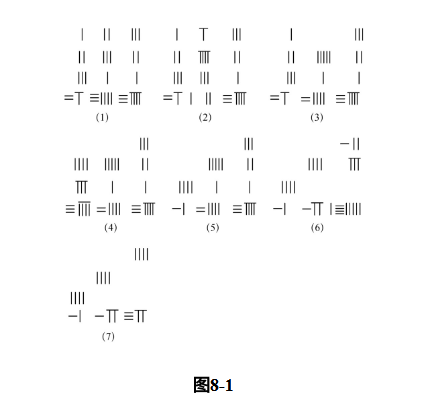

This paper explores the construction of fa (method) in the context of the Fangcheng procedure in The Nine Chapters. It examines how division and positional arrangement contribute to the development of mathematical methods in ancient Chinese mathematics.
This paper examines the fangcheng 方程 procedure in the eighth chapter of The Nine Chapters on Mathematical Procedures (Jiuzhang suanshu 九章算術) as a critical case for understanding the transformation of division in early Chinese mathematics. Here, “early Chinese mathematics” refers to the period covered by the sources discussed in this paper, from the excavated mathematical manuscripts of the late Warring States and early imperial period to the canonization of received mathematical texts as part of the Ten Mathematical Classics in the Tang dynasty.
Existing scholarship has shown that two major groups of sources are especially important for the history of division. The first consists of excavated manuscripts, mainly written on bamboo slips and generally dated to the third or second century BCE. The second consists of later received classics, whose texts were composed from around the first century CE onward and later canonized in the seventh century. These two corpora preserve different yet partly continuous traditions of calculation. Across both, the technical terms shi 實 and fa 法 continue to designate the dividend and divisor in prescriptions of division, providing a common vocabulary through which the transformation of division can be compared.
In the older execution of division attested in the manuscripts, fa remains fixed in value and order of magnitude. It functions as an invariant “pattern” repeatedly subtracted from the dividend, while the quotient is produced step by step as a sequence of unit-based components. In the later classics, division is executed within a decimal place-value system. This allows fa to shift across positions corresponding to powers of ten, so that the quotient can be produced digit by digit.
The fangcheng procedure belongs to this later context. It deals with what would now be called systems of linear equations and solves them through elimination. Its significance lies in the fact that division remains central to the procedure, yet the procedure begins from several coupled quantitative relations rather than from a single dividend-divisor relation. This paper therefore asks what made fangcheng operationally viable as a general method. It argues that the later execution of division provided a necessary condition by freeing fa from the requirement of remaining fixed in order of magnitude, while the positional arrangement of quantities on the calculating surface provided the structural mechanism through which multiple relations could be coordinated and transformed.
The first problem of the fangcheng chapter provides the main case study. It is presented in the standard triadic format of problem statement, answer, and procedure. The problem gives three sets of quantities involving upper, middle, and lower grade grain, each associated with a total amount, and asks for the amount contained in one bundle of each kind. In modern notation, this corresponds to a three-by-three system of linear equations.
Before the procedure begins, Liu Hui’s commentary defines fangcheng as a configuration in which several kinds of items are laid out in columns, with each column treated as a rate and each column accompanied by its shi. His explanation already emphasizes arrangement: the procedure depends on setting out several quantitative relations together in a rectangular form. The base text then prescribes the initial layout of the quantities on the calculating surface. The first set is placed on the right, and the remaining two are placed in the middle and on the left in the same order. Vertically, the entries correspond to upper, middle, lower grain, and the total; horizontally, the columns are arranged from right to left.
Two textual features are especially important. First, after the initial numerical data are placed, the procedure is encoded mainly through positional terms rather than through numerals. It uses vertical terms such as shang 上, zhong 中, and xia 下, together with horizontal terms such as you 右, zhong 中, and zuo 左. This shows that the procedure depends on maintaining the positional articulation of quantities on the calculating surface. The same words may also refer to categories of grain in the problem statement, yet within the procedure they function as operational markers.
Second, the terms shi and fa are used unevenly. Shi appears from the problem statement onward and consistently refers to the totals associated with each quantitative relation. Fa, by contrast, appears only later, after elimination has produced a simplified coefficient that can serve as divisor. This distribution is significant. In earlier division prescriptions, shi and fa usually appear together as a paired relation from the outset. In fangcheng, shi is present from the beginning, while fa emerges through the procedure. This indicates that fangcheng preserves division-related terminology while reorganizing its operational role.

The operational structure of the procedure can be divided into two main phases. The first phase consists of elimination among columns. Columns are multiplied to bring corresponding coefficients into a commensurable relation, and then subtracted from one another until coefficients are eliminated. These transformations are carried out on entire columns, so that the relation between the coefficients and the corresponding shi in the lower row is preserved.
The second phase begins only after elimination has produced a single coefficient in one column. This coefficient is then identified as fa. It is used in relation to the corresponding shi, and the procedure gradually transforms the remaining columns until each unknown is associated with its own fa and shi. At the final stage, standard division is carried out: each shi is divided by its corresponding fa, yielding the value of one unit of each unknown.
This structure explains the uneven use of shi and fa. Shi refers to the totals that embody the overall relational structure of the problem. Intermediate quantities produced during commensuration are not called shi, even when they locally function like dividends. Fa, meanwhile, is not given at the beginning; it is constructed through elimination. The procedure therefore extends the structure of division from a one-divisor-one-dividend relation into a higher-level configuration in which a square of coefficients functions in relation to a row of totals.
This transformation depends on the later execution of division. In the older execution, fa is fixed from the outset, and computation proceeds by repeatedly applying this invariant divisor. In fangcheng, fa is produced relationally through operations among multiple columns. Such a procedure becomes possible only in a context where fa no longer has to remain fixed in order of magnitude. The decimal place-value system of the later classics provides this fundamental condition.
Yet place value alone does not fully explain fangcheng. The crucial additional condition is the calculating surface as a structured medium. Through the prescribed layout, several linear statements from the problem are transformed into a two-dimensional operational object. Each row groups coefficients belonging to the same unknown, while each column preserves one complete quantitative relation and aligns it with its total shi. Because each numeral stands at the intersection of a row and a column, operations can simultaneously compare entries across rows and preserve proportional relations within columns.
This positional framework allows the procedure to operate beyond a single numerical division. It stabilizes multiple relations as one computational configuration, making it possible to construct fa through elimination and then apply division at the end. Other problems in the fangcheng chapter follow the same layout and are solved “as in fangcheng” 如方程, showing that this arrangement was treated as a general procedure rather than as a solution limited to one example.
The fangcheng procedure shows how the transformation of division in early Chinese mathematics took concrete form within a specific mathematical practice. The analysis of shi and fa, together with the predominance of positional language, suggests that fangcheng became operationally viable through the conjunction of two conditions: the decimal place-value execution of division and the positional arrangement of quantities on the calculating surface.
The later execution of division made it possible for fa to be constructed during computation, while the calculating surface enabled several coefficient-total relations to be arranged, compared, transformed, and stabilized as one shared computational object. Fangcheng therefore illustrates how mathematical procedures were formed through the interaction of algorithmic logic, technical terminology, and material practice. It also shows that counting rods and positional arrangements contributed not only to local operations, but also to the broader organization of mathematical reasoning in early China.
Chemla, Karine. 2022. “Working on and with Division in Early China, Third Century BCE—Seventh Century CE.” In Cultures of Computation and Quantification in the Ancient World: Numbers, Measurements, and Operations in Documents from Mesopotamia, China and South Asia, edited by Karine Chemla, Agathe Keller, and Christine Proust. New York: Springer.
Chemla, Karine. 2024. “Different Clusters of Texts from Ancient China, Different Mathematical Ontologies.” In Science in the Forest, Science in the Past: Further Interdisciplinary Explorations, edited by Willard McCarty, Geoffrey E. R. Lloyd, and Aparecida Vilaça. London: Routledge.
Guo, Shuchun. 2020. Jiuzhang Suanshu Yizhu (Xiuding Ben) (九章筭术译注 [修订本]). Shanghai: Shanghai Guji Chubanshe.
Peng, Hao. 2001. Zhangjiashan Hanjian “Suan Shu Shu” Zhushi (张家山汉简《算数书》注释). Beijing: Kexue Chubanshe.
Shen, Kangshen, John N. Crossley, and Anthony W.-C. Lun. 1999. The Nine Chapters on the Mathematical Art: Companion and Commentary. Oxford: Oxford University Press.